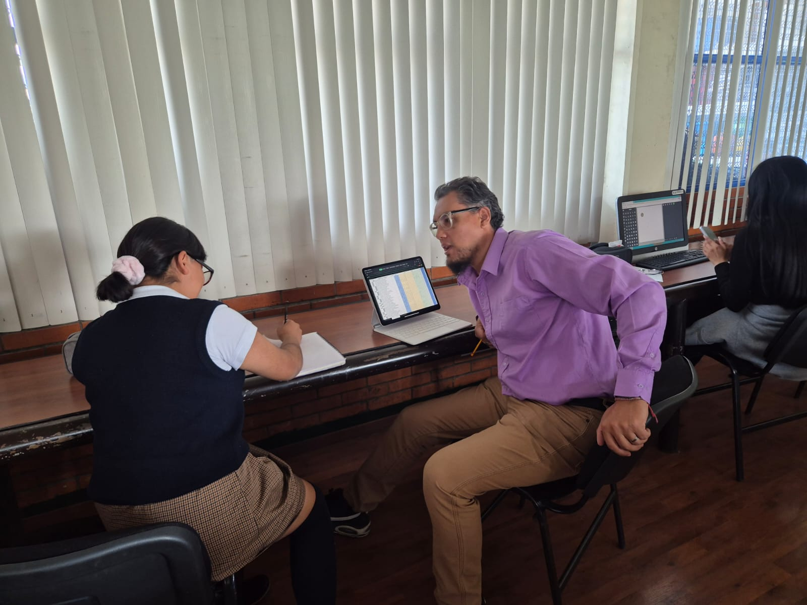

| Instituto Politécnico Nacional | Instituto Tecnológico De Ecatepec |
|---|---|
El Instituto Politécnico Nacional (IPN) es una de las principales instituciones de educación superior en México Fundado en 1936, se especializa en la enseñanza e investigación en ciencia, tecnología, ingeniería y matemáticas, además de áreas como administración, salud y humanidades. Su misión es brindar educación pública de alta calidad y fomentar el desarrollo tecnológico e industrial del país. Su lema es "La Técnica al Servicio de la Patria". |
El Instituto Tecnológico de Ecatepec (ITE) es una institución de educación superior en México, perteneciente al Tecnológico Nacional de México (TecNM). Se encuentra en Ecatepec, Estado de México, y ofrece carreras enfocadas en ingeniería, tecnología y ciencias aplicadas. Su objetivo es formar profesionales con conocimientos técnicos y científicos para contribuir al desarrollo industrial y tecnológico del país. |
| El Instituto Politécnico Nacional (IPN) | Istituto Tecnologico De Ecatepec (ITE) |
| Ingeniero en Electronica | Matematicas |
|---|---|
Un ingeniero electrónico es un profesional multidisciplinar que se ocupa de diseñar, desarrollar, probar y supervisar la fabricación |
El area de geometría es la rama de las matematicas que más le gusta enseñar ya que es la materia en la que más destaca. |
| Ingenieria en electronica |
Cáncer es un signo cardinal y comprendido dentro de los signos de agua. De los signos zodiacales, su carácter es el menos claro;
puede ser desde retraído, insociabl..e y p.elma, hasta deslumbrante, atractivo y admirado por los demás. A veces es demasiado soñador,
por eso equivoca el mundo real con la utopía que ha construido en su cabeza:
el refugio de las fantasías que adora.
Horoscopo de cancer